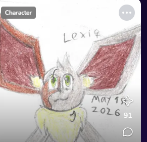
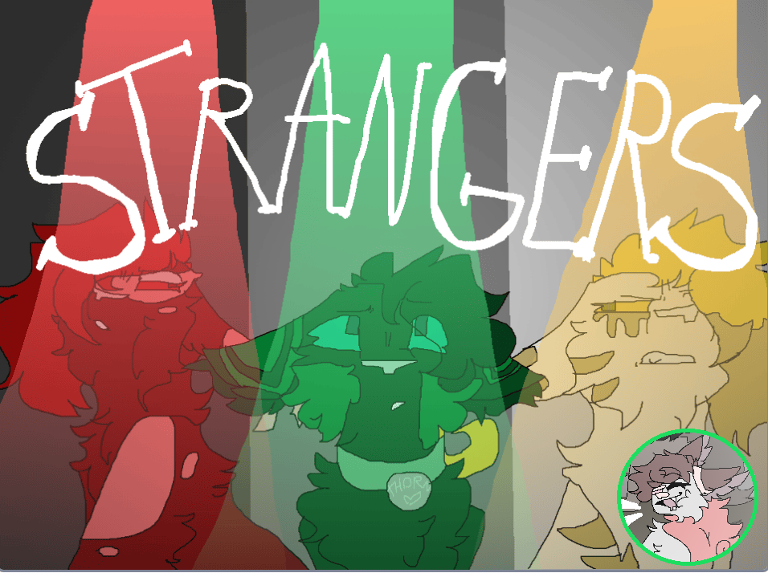
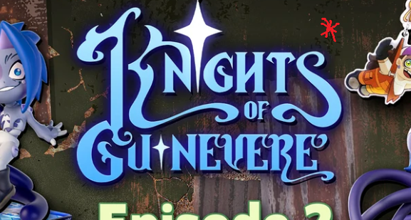
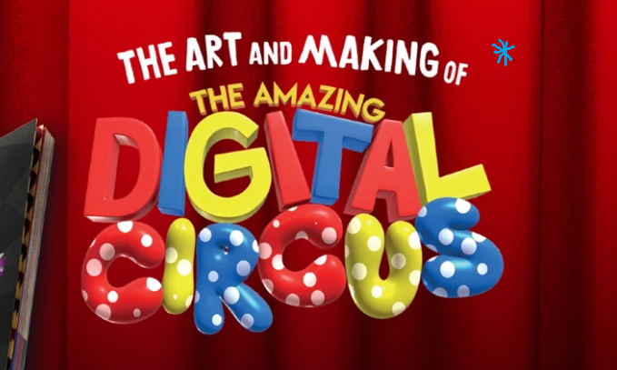
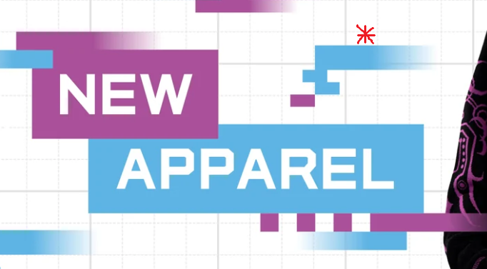

*img is a place holder*

Run Monster Run, The backwards House, Vocaliod,
The Amazing Digital circus, Murder Drones, Game-o-verse, Knights of Guinevere,
Furries (cosplay, not the weird stuff), Mermiads,
Indigo park, Poppy playtime (thanks a lot Uniquegeese!/sarcasum),
INUbis smiling critter spin-off, Warrior cats,
(i will open a discord server at 1000 subs)

I voiced clovernose in my cousin's warrior cat comic dub: Strangers
Me, my cousin, and my sister have been besties for awhile
so she kinda just drafted me into it. tbf i was already looking for VA roles
im glad i got to work on this and i consiter it my first major VA role
credit to Musicat46, Cinderthesandwing, and BunnyUFO for making this comic happen.

i voiced gwen (not really this is a placeholder)
got into this project cus AEEEEEEEEEEEEEEEam evol
gonna do some sINging im so gratful for the opirtunty and i give credit where credit is dooo

i was the lead concept artist (not really this is a placeholder)
got into this project cus AAAAAAeeeeeeAAAAAAA kitens and punch
gonna do some magic im so gratful for the opirtunty and i give credit wheeeer credit is do

i voiced the T-shirt (not really this is a placeholder)
got into this project cus AEEEEsssam evol
gonna do somepainting im so gratful for the opirtunty and i give credit where credit is dooo
testing the scroll